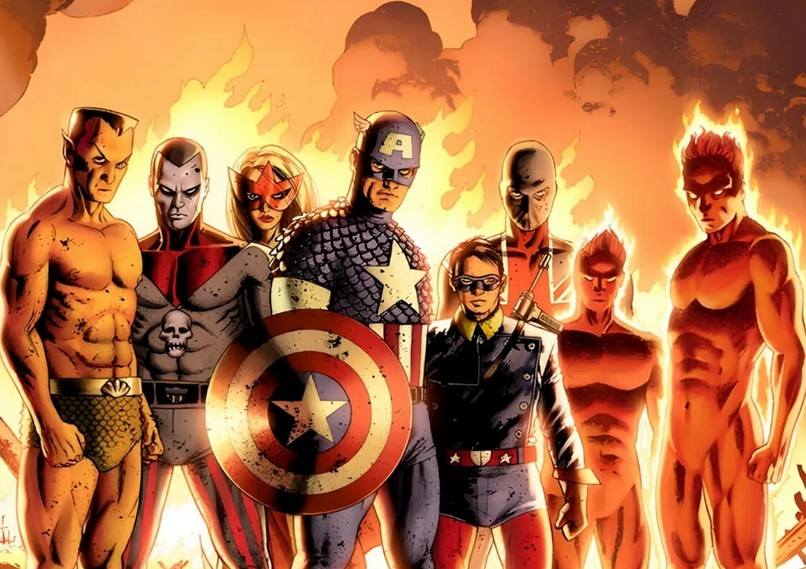
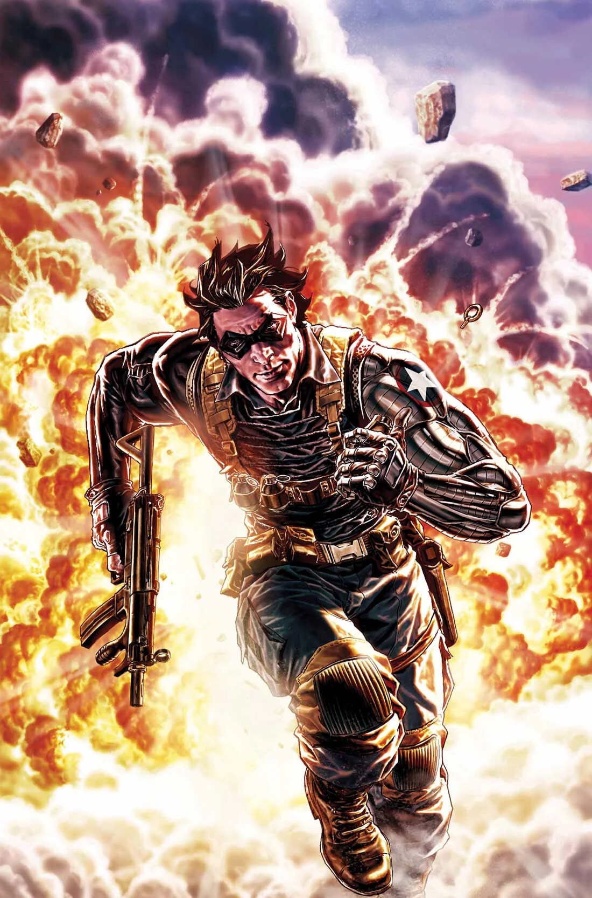
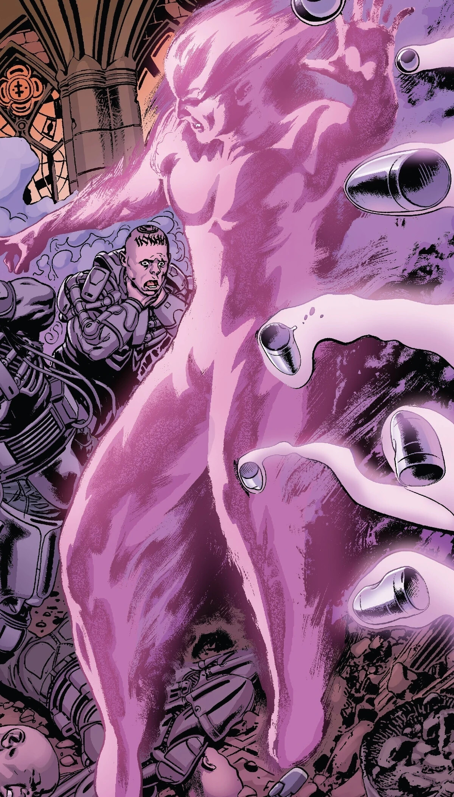
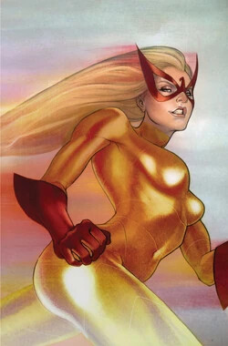
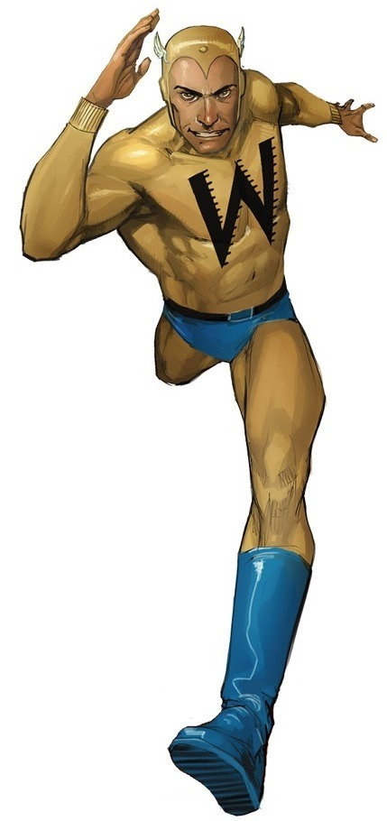
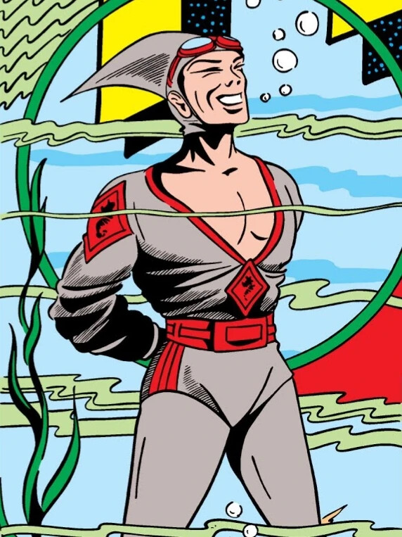
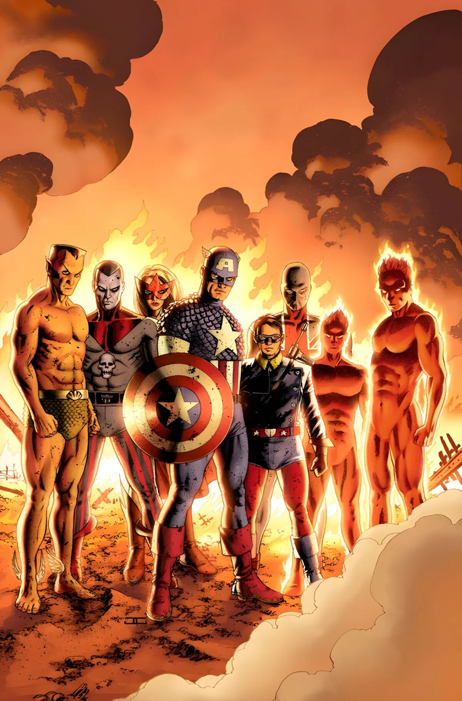

Les Envahisseurs

L'équipe des Envahisseurs est, à la base, un rassemblement de héros, réunis pour lutter ensemble face au nazisme.
L'équipe est d'abord composée de :
 
Lors de leur première apparition, le groupe sauva le premier ministre britannique Winston Churchill d'un attentat mené par le super-vilain nazi Master Man. L'homme politique les remercia et leur suggéra de devenir une équipe attaquant le Troisième Reich sur son terrain, sous le nom des Envahisseurs. Les Envahisseurs combattirent l'Axe, sauvant de nouveau Churchill visé par U-Man.
Ils se retrouvèrent finalement en Angleterre, où ils firent le rencontre de Lord James Montgomery Falsworth, le premier Union Jack.
Le héros rejoignit l'équipe et leur fournit une base d'opérations au Royaume-Uni. Pendant leur première mission ensemble pour stopper le Baron Blood, ses jambes furent broyées.
Le groupe ajouta plus tard à l'effectif Miss America et le Whizzer pendant un combat contre le Super-Axe.
 
Durant une mission où ils étaient associés au Major Liberty (Captain America et Toro étaient alors indisponibles), les trois autres Envahisseurs originels découvrirent que le Baron Strucker avait acquis un artefact puissant capable de contrôler les dieux Asgardiens et asservi la déesse de la mort, Hela. La déesse fut bannie de son royaume, et Strucker fut mis en fuite. Pour désactiver l’artefact, ils le brisèrent et en prirent chacun un fragment qu'ils cachèrent individuellement, avant d'oublier l'événement avec l'aide d'Aarkus, venu d'une autre dimension. En décembre 1943, les Envahisseurs se rendirent en Italie pour retrouver une arme expérimentale avant que les forces d'Hitler ne s'en emparent.
Puis, les Envahisseurs éliminèrent la population entière d'un village Néerlandais, après qu'ils aient été contaminés par un virus faisant d'eux des abominations. L'équipe continua de lutter contre la menace, mais fut particulièrement affectée par la disparition tragique de Bucky, puis de Captain America, vers la fin du conflit mondial. A la fin de la guerre, plusieurs membres formèrent l'Équipe des Gagnants, avec les seconds Captain America et Bucky. En 2004, une nouvelle équipe d'Envahisseurs fut montée. Elle incluait : 
Les New Invaders étaient aidés par le Rorqual et sa femme atlante, Nia. L'équipe fut formée par le secrétaire à la Défense, Dell Rusk (en réalité Crâne Rouge infiltré, qui comptait utiliser les héros à ses propres fins). Mais les héros découvrirent son plan et s'opposèrent à lui.



Ils furent conditionnés mentalement par Crâne Rouge et forcés d'attaquer les Forces Alliés.
Ses enfants, Brian et Jacqueline devinrent membres à leur tour.
Un peu après, Blazing Skull et Silver Scorpion firent de même.


Ils traversèrent une brume étrange qui les propulsa 60 ans dans le futur, où ils rencontrèrent les Avengers.


Elle se sépara par la suite.